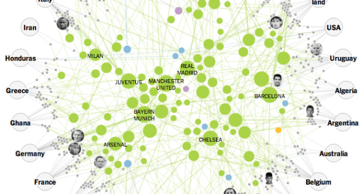
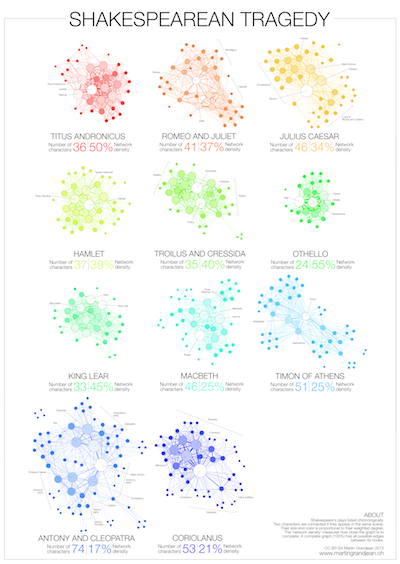
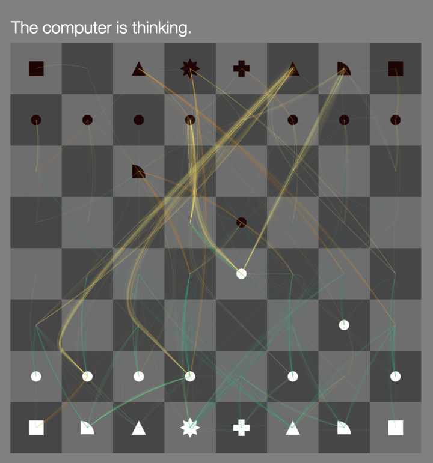
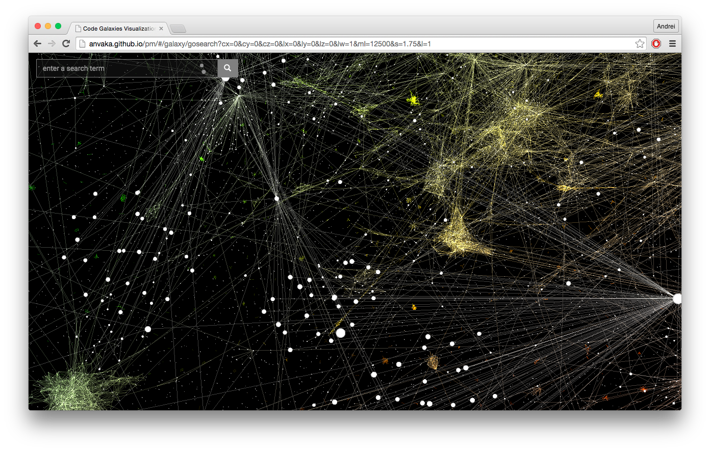

Network Visualisations
Networks can represent all sorts of systems in the real world. For example, one could describe the Internet as a network where the nodes are computers or other devices and the edges are physical (or wireless, even) connections between the devices. The World Wide Web is a huge network where the pages are nodes and links are the edges. Other examples include social networks of acquaintances or other types of interactions, networks of publications linked by citations, transportation networks, metabolic networks, and communication networks.
Air Transportation Network
Flight pattern maps are fun to look at and reveal the complexity of air transportation on a daily basis. But, there are other angles to look at this data from. Martin Grandjean used a force-directed graph to focus less on geography and more on volume and connections. Color represents continent, circles represent airports, and circle size represents number of routes.This “map” is the result of the application of a force-directed layout algorithm on a graph of 3.275 airports (37.153 single routes – the weighted total is higher because many airlines take the same route), based on OpenFlights.org data.
The New York Times : Clubs that connect World Cup national teams
Gregor Aisch for the New York Times explored how the soccer clubs that play all year connect the national teams in this year’s World Cup.

Shakespeare tragedies as network graphs
Martin Grandjean looked at the structure of Shakespeare tragedies through character interactions. Each circle (node) represents a character, and each connecting line (edge) represents two characters who appeared in the same scene.
One can observe the longest tragedy (Hamlet) is not the most structurally complex and is less dense than King Lear, Titus Andronicus or Othello. Some plays reveal clearly the groups that shape the drama: Montague and Capulets in Romeo and Juliet, Trojans and Greeks in Troilus and Cressida, the triumvirs parties and Egyptians in Antony and Cleopatra, the Volscians and the Romans in Coriolanus or the conspirators in Julius Caesar.

Play chess against the machine and see what it’s thinking
The Thinking Machine, by Martin Wattenberg and Marek Walczak, shows you the thought process of a computer trying to win at chess. There have been several iterations that date back to 2002, but the most recent iteration was built for modern browsers and you can play against the computer.

Soft Galaxies
Software Galaxies by Andrei Kashcha visualizes popular software package managers as interactive galaxies. Each node is a package and connections indicate dependencies between packages. Position of a package is determined by force based graph layout algorithm and usually clusters together packages that depend on each other.
